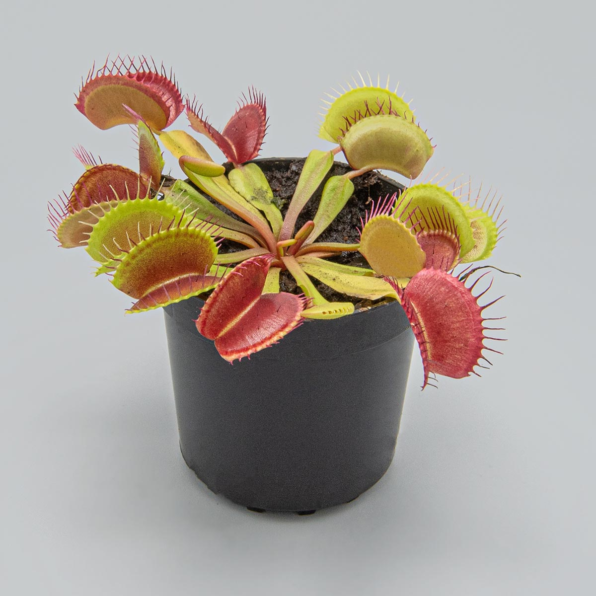

Венерина мухоловка (лат. Dionaea muscipula) — вид хищных растений из монотипного рода Дионея семейства Росянковые.
Венерина мухоловка ловит своих жертв
с помощью специализированного ловчего аппарата,
образованного из краевых частей листьев.
Захлопывание ловушки инициируется тонкими триггерными
(чувствительными) волосками на поверхности листьев.
Для захлопывания ловчего аппарата необходимо оказать
механическое воздействие минимум на два волоска на
листе с интервалом не более 20 секунд.
Такая избирательность обеспечивает защиту
от случайного захлопывания в ответ на падение объектов,
не имеющих питательной ценности.
Более подробная информация здесь.
